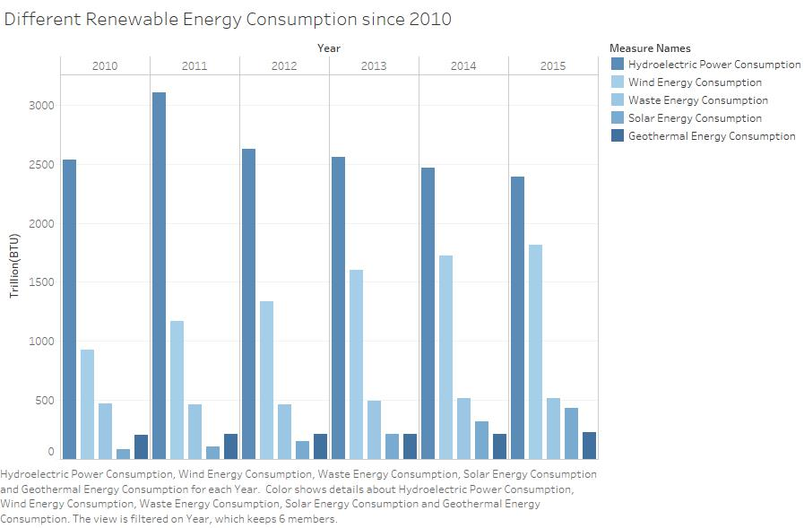
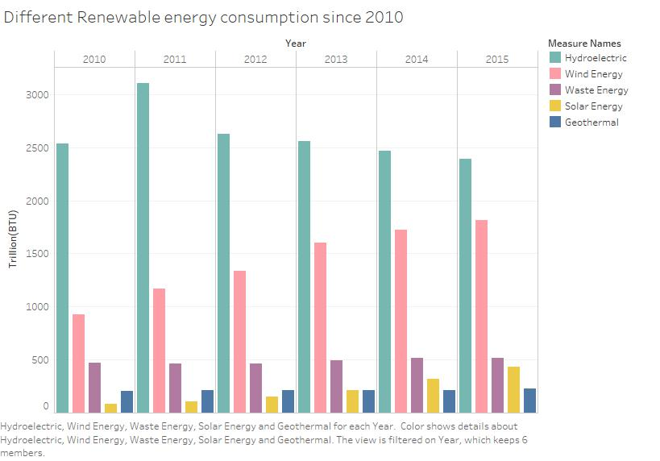
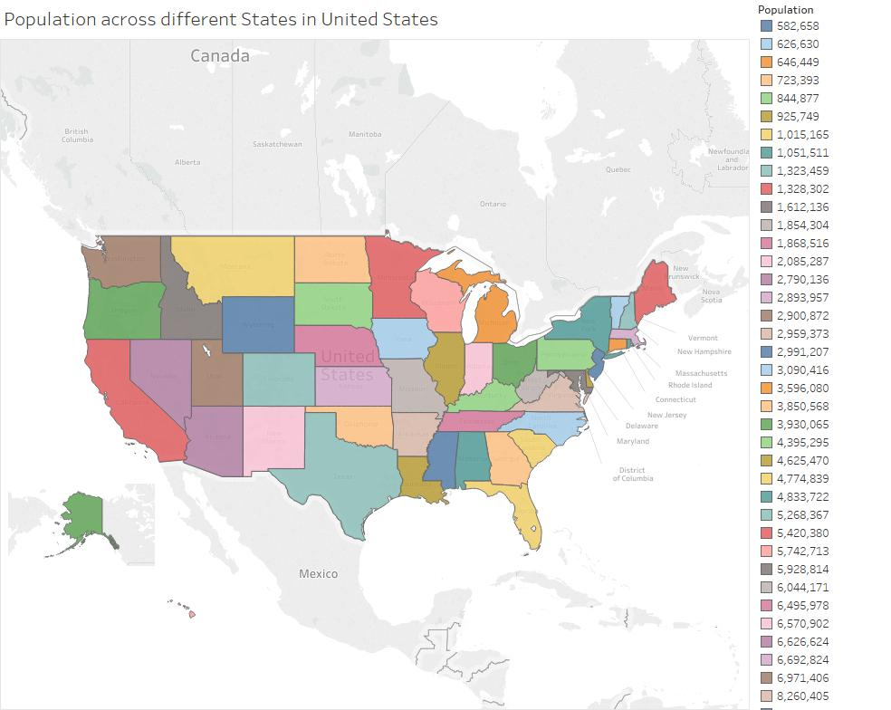
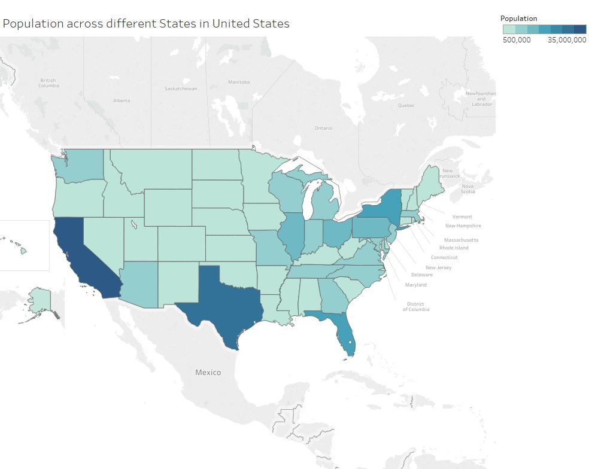
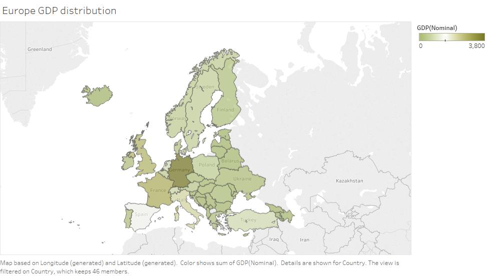
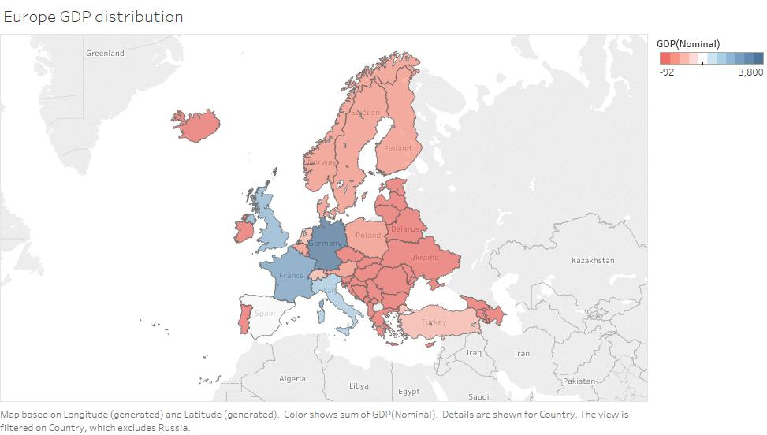

Color Education!!!!
Welcome to the wonderful world of Visualization
Well to be honest, just a page of Visualization.
OK, to be brutally honest, you are just going to know about different color mapping strategies...
Happy? No? What more did you expect from this one page website?
Anyways, so there are three Main types of Color Maps, and below you will get to see the examples of each.
- Categorical
- Sequential
- Diverging
Categorical:
Let's start with Categorical, when we have categorical data, we also try to use a categorical representation to visualize it.
Now I assume you know what a categorical data is, no? Apple, Oranges and Pineapple. You can't quantify these fruits,
you can only divide them into different categories. Hope now you have a better understanding.
Now to visualize this, let's quickly take an example. Just take a look at the below exampe:

Source of Data -> http://www.eia.gov/renewable/data.cfm
How does this look? In the above graph we have five different Renewable energy consumption details since 2010.
I am pretty sure you already figured that out, but do you have to frequently oscillate between the graph and the legend?
Also, which is highly consumed, Hydroelectric or Geothermal? After carefully looking and understanding the depth of the color,
you will be able to answer that question. This is why, its a BAD representation of the given categorical data.
Let's trying remodling this graph.

Source of Data -> http://www.eia.gov/renewable/data.cfm
Wow!!! This looks so much better. All the categories have been differentiated by different types of color.
You can easily make out each separate type of Renewable Energy. This makes it GOOD
So with this you can understand how categorical data can be represented by categorical colors.
And more importantly, why its important!
Sequential:
Tell me you know what sequential is. I'm not going to explain data like 4 apples, 40 apples or 400 apples.
Oh No! I already did. No wonder I can't hold any secrets.
Anyways, when you have sequential data, you want to show it in a sequential manner.
Let's take a bad example below:

Source of Data -> http://www.enchantedlearning.com/usa/states/population.shtml
It's the United States map!!! Did you know Alaska and Hawaii are not in the correct position as shown in this picture?
I bet you knew that, if you didn't, go check out an actual map and find out where it is exactly.
But coming back to topic, this graph shows the population across different states in US.
It's BAD. Do you know why?
You already knew the different states of the US(at least I hope so), so you don't need that detail in your legend.
Although going through the states and the legend will give you the population of each state, but won't show the trend.
Now tell me which is the most populated state from this graph?
Can't say? Data not available in the legends? It's not interactive? HA HA, fooled you...
Well, this is an image extracted from the graph I made in Tableau, and apparently the image extraction from Tableau doesn't
give all the details of the legend.
I apologize for that, but let me make it up to you by showing this:

Source of Data -> http://www.enchantedlearning.com/usa/states/population.shtml
TADA!!!
Now you can take a single look at the legend and the graph and tell that the most populated State in US is California.
Well some people might say that Texas is also a good contender, I would say look carefully then. If you still don't believe it, google it.
So what do we understand from this, sequential data can be very well represented by Sequential color mapping.
By stepping up the shade of blue, you know the value is also higher. This makes the visualization easier to understand.
Thus we categorize it as GOOD
Diverging:
"Now what is this now? I understood categorical and Sequential. What possibly could be Diverging??? Dividing an apple into two???"
Is that what you are thinking now? Well actually its true, we do split. We split the data, not the apple(Well eating an apple after splitting is easier, just fyi).
When we need to show the data which has a mid point(or points), and we want to show two extremes of the different direction, we use Divergent Color Mapping.
It's actually a combination of Sequential and Categorical, We use two different colors to categorize the opposite side of mid points, and then stepping colors for the extreme sides.
Too complicated? Let me explain you with a global example:

Source of Data -> http://statisticstimes.com/economy/european-countries-by-gdp.php
So let's learn about Europe. This graph shows the GDP across different countries in Europe.
pssst... Fun Fact: UK is no longer a part of European Union, so the data might be old. Well it's not fun for UK guys, but we can always make fun of them.
Why is this BAD? There's a mid point of 1500, which shows the divide between high and low GDP countries.
But you will not be able to identify the trend with the given legend. Hence the graph doesn't make much sense.
Although you can understand Spain lies in the mid point range, but you are not clearly sure.
Tell me, how much would be the difference of GDP between France and Finland. Not much? Let's see another example

Source of Data -> http://statisticstimes.com/economy/european-countries-by-gdp.php
Wow, so much information is now easily entering into my brain. Either you were underestimating France's economy,
or you are a big fan of Linus Torvalds and hoping he made enough money to help
Finland's exonomy as well.
So now you can easily tell which countries have high GDP, and which countries have low.
Spain comes in the mid range, and the color difference between Blue and Red clearly makes a distinction, which we can easily understand.
That's why this becomes a GOOD visualization of Diverging data.
Conclusion:
So now you know different types of color mapping techniques with different types of data.
Sequential Color Mapping -> When you want to show an increasing or decreasing trend.
Categorical Color Mapping -> When you want to show distinct categories in a graph.
Diverging Color Mapping -> When you have to show data which has two extremes divided by a points(or points).
It all depends on what do you want to show to your audience, hopefully you will make use of this information and remember me when you do it(or don't it all depends on the goodness of your heart).
Just to show off, below is another Sequential map of the population of United States across each state, which has been drawn from D3.js
And yes it is interactive, just zoom and hover though, couldn't do a lot. Maybe later...